All seasons
Alone
14 seasons · 140 survivalists · 152 episodes · 5,178 days survived between them
14Seasons
140Survivalists114 different people
100daysLongest stayRoland Welker, S7
71.2daysAverage winning time
19%Medically evacuated27 survivalists
1Female winnersof 14 winners
Every season
Select a season for the full results, survivalist profiles, loadouts and episode guide.
| Season | Subtitle & location | Winner | Winning days | Avg days | Med-evacs | Episodes | Avg IMDb |
|---|---|---|---|---|---|---|---|
| Season 1 | Vancouver Island, British Columbia, Canada | Alan Kay | 56 | 21.6 | 0 | 11 | 7.6 |
| Season 2 | Vancouver Island, British Columbia, Canada |  David McIntyre David McIntyre | 66 | 33.8 | 1 | 13 | 7.6 |
| Season 3 | Patagonia, Argentina | 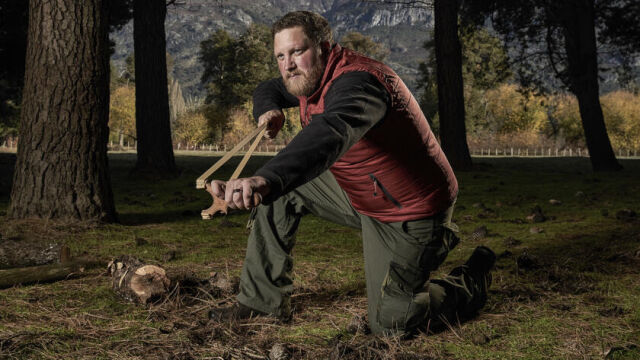 Zachary Fowler | 87 | 54.3 | 3 | 10 | 7.8 |
| Season 4 | Lost and FoundVancouver Island, British Columbia, Canada |  Jim Baird & Ted Baird Jim Baird & Ted Baird | 75 | 31.4 | 2 | 10 | 7.3 |
| Season 5 | RedemptionSelenge Province, Mongolia |  Sam Larson Sam Larson | 60 | 30.1 | 3 | 10 | 7.9 |
| Season 6 | The ArcticGreat Slave Lake, Northwest Territories, Canada | 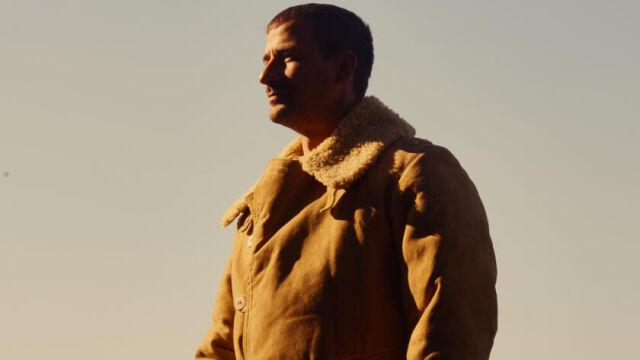 Jordan Jonas | 77 | 45.4 | 5 | 11 | 8.0 |
| Season 7 | Million Dollar ChallengeGreat Slave Lake, Northwest Territories, Canada |  Roland Welker Roland Welker | 100 | 49.9 | 3 | 11 | 8.3 |
| Season 8 | Grizzly MountainChilko Lake, British Columbia, Canada | 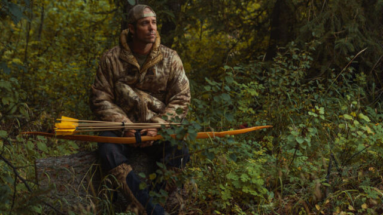 Clay Hayes | 74 | 41.2 | 3 | 11 | 7.8 |
| Season 9 | Polar Bear IslandBig River, Labrador, Canada |  Juan Pablo Quinonez Juan Pablo Quinonez | 78 | 46.1 | 3 | 11 | 7.7 |
| Season 10 | Predator LakeReindeer Lake, Saskatchewan, Canada | 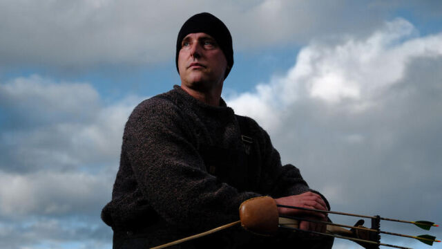 Alan Tenta | 66 | 37.0 | 0 | 11 | 7.8 |
| Season 11 | Arctic CircleMackenzie River delta in Arctic, Inuvik, Northwest Territories, Canada |  William Larkham Jr. William Larkham Jr. | 84 | 37.3 | 2 | 12 | 8.0 |
| Season 12 | AfricaGreat Karoo Desert, South Africa | 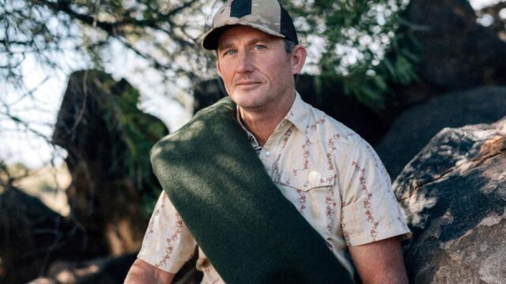 Nathan Olsen | 34 | 16.0 | 1 | 10 | 6.7 |
| Season 13 | World ChampionshipBeaufort Delta, Northwest Territories, Canada |  Ziga Ogorelec Ziga Ogorelec | 90 | 46.7 | 1 | 13 | 7.9 |
| Alone: Frozen | Coast, Labrador, Canada | Woniya Thibeault | 50 | 24.0 | 0 | 8 | 7.5 |
Winners & tap-outs
How long it took to win each season, and what ended everyone else's run.
Winning time by season
Why they tapped out (excluding winners)
- Health / medical
- Personal
- Other
All
71
51
125
Show as table
| Season | Health | Personal | Other |
|---|---|---|---|
| S1 | 1 | 7 | 1 |
| S2 | 3 | 6 | 0 |
| S3 | 5 | 4 | 0 |
| S4 | 6 | 6 | 0 |
| S5 | 4 | 5 | 0 |
| S6 | 6 | 2 | 1 |
| S7 | 8 | 0 | 1 |
| S8 | 7 | 2 | 0 |
| S9 | 7 | 2 | 0 |
| S10 | 6 | 3 | 0 |
| S11 | 5 | 4 | 0 |
| S12 | 6 | 3 | 0 |
| S13 | 5 | 4 | 0 |
| Frozen | 2 | 3 | 0 |
How long they lasted
Every survivalist in every season, plotted by days lasted. Hover or tab to a dot for details.
- Winner
- Tapped out: health / medical
- Tapped out: personal
- Other (loss of inventory, disqualified)
S1Vancouver Island
S2Vancouver Island
S3Patagonia
S4Lost and Found
S5Redemption
S6The Arctic
S7Million Dollar Challenge
S8Grizzly Mountain
S9Polar Bear Island
S10Predator Lake
S11Arctic Circle
S12Africa
S13World Championship
FrozenCoast
The winners
Last one standing, every season.
56 days66 days75 days 75 days60 days100 days78 days84 days90 days
75 days60 days100 days78 days84 days90 days
S1Alan KayAge 40 · Blairsville, Georgia
66 daysS2David McIntyreAge 50 · Kentwood, Michigan
87 daysS3Zachary FowlerAge 36 · Appleton, Maine
75 daysS4Jim BairdAge 35 · Toronto, Ontario, Canada
75 daysS4Ted BairdAge 32 · Toronto, Ontario, Canada
60 daysS5Sam LarsonAge 24 · Lincoln, Nebraska
77 daysS6Jordan JonasAge 35 · Lynchburg, Virginia
100 daysS7Roland WelkerAge 47 · Red Devil, Alaska
74 daysS8Clay HayesAge 40 · Kendrick, Idaho
78 daysS9Juan Pablo QuinonezAge 30 · Pinawa, Manitoba, Canada
66 daysS10Alan TentaAge 52 · Columbia Valley, British Columbia, Canada
84 daysS11William Larkham Jr.Age 49 · Happy Valley Goose Bay, Labrador, Canada
34 daysS12Nathan OlsenAge 52 · Buhl, Idaho
90 daysS13Ziga OgorelecAge 35 · Kocevje, Slovenia
50 daysFrozenWoniya ThibeaultAge 45 · Grass Valley, California
Records
Longest stays


Returning survivalists
| Survivalist | Appearances |
|---|---|
| Sam Larson | S1 2nd (55d) → S5 1st (60d) |
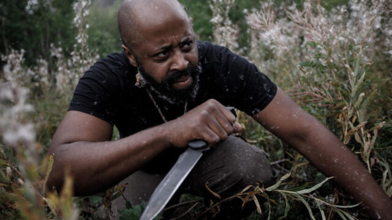 Britt Ahart | S3 8th (35d) → S5 2nd (56d) |
 Larry Roberts Larry Roberts | S2 2nd (64d) → S5 3rd (41d) |
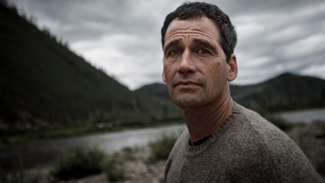 Dave Nessia | S3 4th (73d) → S5 4th (36d) |
 Randy Champagne Randy Champagne | S2 6th (21d) → S5 5th (35d) |
 Brooke Whipple Brooke Whipple | S4 3rd (49d) → S5 6th (28d) |
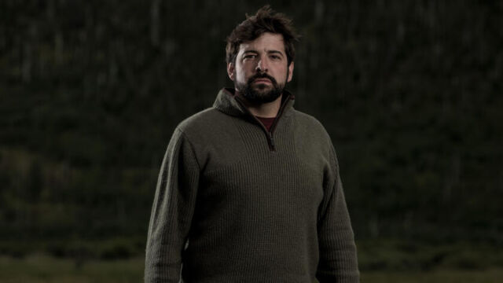 Jesse Bosdell | S4 5th (5d) → S5 7th (24d) |
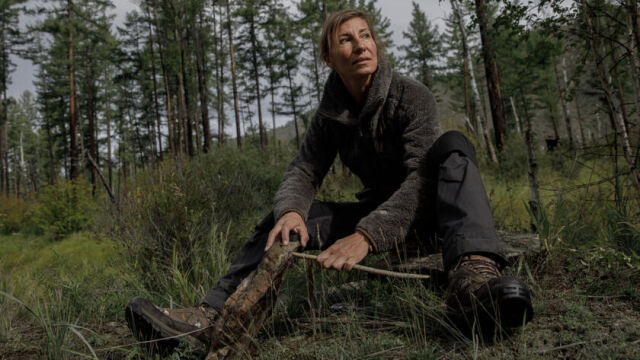 Nicole Apelian | S2 4th (57d) → S5 8th (9d) |
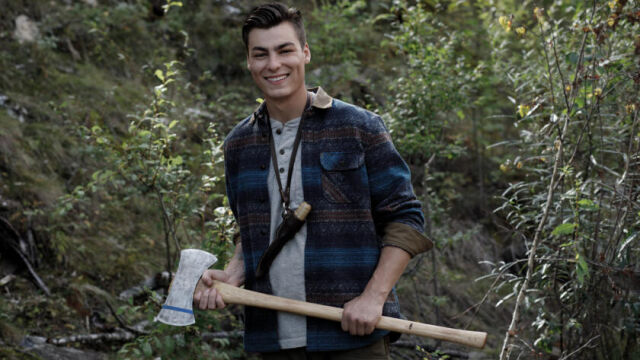 Brad Richardson | S4 7th (1d) → S5 9th (7d) |
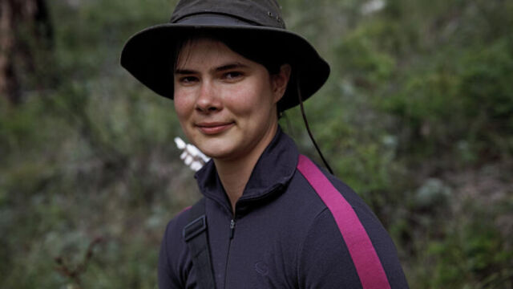 Carleigh Fairchild | S3 2nd (86d) → S5 10th (5d) |
Juan Pablo Quinonez | S9 1st (78d) → S10 1st (66d) |
 Jacques Turcotte Jacques Turcotte | S9 10th (15d) → S10 2nd (64d) |
 Terry Burns Terry Burns | S9 7th (42d) → S10 3rd (55d) |
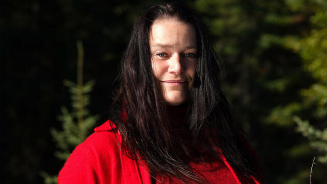 Karie Lee Knoke | S9 2nd (75d) → S10 4th (43d) |
 Jessie Krebs Jessie Krebs | S9 5th (46d) → S10 5th (40d) |
 Igor Limansky Igor Limansky | S9 9th (20d) → S10 6th (23d) |
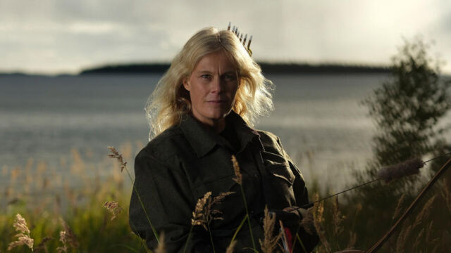 Adam Riley | S9 4th (52d) → S10 7th (22d) |
 Tom Garstang Tom Garstang | S9 6th (43d) → S10 8th (20d) |
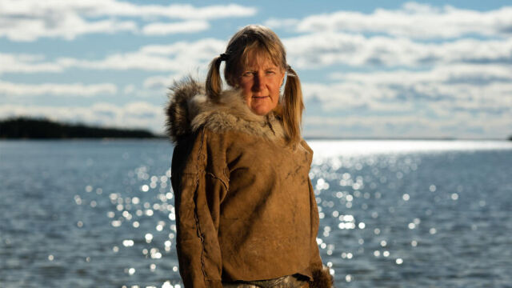 Teimojin Tan | S9 3rd (63d) → S10 9th (19d) |
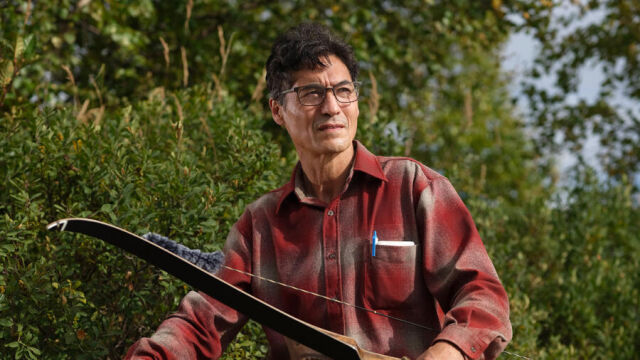 Benji Hill | S9 8th (27d) → S10 10th (18d) |
Woniya Thibeault | S6 2nd (73d) → Frozen 1st (50d) |
Michelle Finn | S8 8th (21d) → Frozen 2nd (38d) |
Callie Russell | S7 2nd (89d) → Frozen 3rd (26d) |
Amos Rodriguez | S7 4th (58d) → Frozen 4th (19d) |
Greg Ovens | S3 6th (51d) → Frozen 5th (6d) |
Mark D'Ambrosio | S7 5th (44d) → Frozen 6th (5d) |
Most popular loadout items
Each survivalist picks ten items to take into the wilderness.
Share of survivalists who packed each item — top 15 of 31 item types, across 134 loadouts.